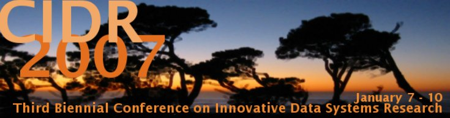

|
SUNDAY
January 7 |
3 PM |
Registration |
|
|
6 PM |
Dinner |
|
|
7 PM |
Evening Get-together |
|
|
|
|
|
MONDAY January 8 |
7:00 |
Breakfast |
|
|
8:30 – 9:10 |
Keynote (Chair: Joe Hellerstein) |
|
|
|
All Roads Lead
to CIDR: A Funny Thing Happened to me on the Way to Proactive Computing David Tennenhouse |
|
|
9:10 – 10:30 |
Sensor Networks and
Messaging (Chair:
Sam Madden) |
|
|
|
SwissQM: Next Generation Data Processing in
Sensor Networks Rene Mueller, Gustavo Alonso, Donald Kossmann (ETH Data-Driven Processing in Sensor Networks Adam Silberstein, Rebecca
Braynard, Gregory Filpus, Gavino Puggioni, Alan Gelfand, Kamesh Munagala, Jun
Yang (Duke University) Rethinking Data Management for Storage-centric
Sensor Networks Yanlei Diao, Deepak
Ganesan, Gaurav Mathur, Prashant Shenoy (
Demaq: A Foundation for Declarative XML Message
Processing Alexander Böhm,
Carl-Christian Kanne, Guido Moerkotte ( |
|
|
10:30 – 11:00 |
Coffee Break |
|
|
11:00 – 12:30 |
Unconventional Query
Processing (Chair: Chris Olston) |
|
|
|
Cache-Oblivious Query Processing Bingsheng He, Qiong Luo
(HKUST) A Black-Box Approach to Query Cardinality
Estimation Tanu Malik, Randal Burns
(JHU), Nitesh Chawla ( Stratos Idreos, Martin
Kersten, Stefan Manegold (CWI)
Database Servers on Chip Multiprocessors:
Limitations and Opportunities Nikos Hardavellas, Ippokratis
Pandis, Ryan Johnson, Naju Mancheril, Anastassia Ailamaki, Babak Falsafi ( |
|
|
12:30 |
Lunch |
|
|
1:30 – 2:30 |
DB & IR Integration (Chair: Alon Halevy) |
|
|
|
The CompleteSearch Engine: Interactive,
Efficient, and Towards IR& DB Integration Holger Bast, Ingmar Weber
(Max-Planck Institute of Informatics) Efficient and Flexible Information Retrieval
using MonetDB/X100 (Demo) Sandor Heman, Marcin
Zukowski, Arjen de Vries, Peter Boncz (CWI)
Predicate-based Indexing of Enterprise Web
Applications (Demo) Cristian Duda, David A. Graf, Donald Kossmann (ETH Entity Search Engine: Towards Agile Best-Effort
Information Integration over the Web (Demo) Tao Cheng, Kevin Chang
(UIUC) A Dataspace Odyssey: The iMeMex Personal
Dataspace Management System (Demo) Lukas Blunschi, Jens-Peter Dittrich,
Olivier Rene Girard, Shant Kirakos Karakashian, Marcos Antonio Vaz Salles
(ETH |
|
|
2:30 – 3:00 |
Coffee Break |
|
|
3:00 – 5:00 |
Grid, P2P, Communities (Chair: Gustavo Alonso) |
|
|
|
Turning Cluster Management into Data Management:
A System Overview Eric Robinson, David J.
DeWitt (University of Wisconsin-Madison) Life beyond Distributed Transactions: an
Apostate’s Opinion Pat Helland (Amazon) One table stores all: Enabling painless free-and-easy
data publishing and sharing Bei Yu (National University
of Singapore), Guoliang Li (Tsinghua University), Beng Chin Ooi (National
University of Singapore), Li-Zhu Zhou (Tsinghua University) The Data Ring: Community Content Sharing Serge Abiteboul (INRIA),
Neoklis Polyzotis (
P2P Web Search: Make It Light, Make It Fly (Demo) Matthias Bender, Tom
Crecelius, Sebastian Michel, Josiane Xavier Parreira (Max-Planck Institute of
Informatics) DBLife: A Community Information Management
Platform for the Database Research Community (Demo) Pedro DeRose (University of
Illinois Urbana Champaign), Warren Shen, Fei Chen, Yoonkyong Lee, Doug
Burdick, AnHai Doan (University of Wisconsin-Madison), Raghu Ramakrishnan
(Yahoo! Research) |
|
|
6:00 |
Dinner |
|
|
7:00 |
Evening Get-together |
|
|
7:15 – 9:30 |
Gong Show (Chair: Natassa Ailamaki) |
|
|
|
25 people will have 5 minutes
each to present: their most outrageous idea, or a challenge they would like
to see the community work on, or any other thoughts to get the attention of
the audience. There will be prizes for the best presentations in different
categories. |
|
|
|
|
|
TUESDAY January 9 |
7:00 |
Breakfast |
|
|
8:30 – 9:10 |
Keynote (Chair: Gerhard Weikum) |
|
|
|
One Size Fits All? Part 2: Benchmarking
Studies Michael Stonebraker (MIT),
Chuck Bear (Vertica), Ugur Cetintemel (Brown University), Mitch Cherniack
(Brandeis University), Tingjian Ge (Brown University), Nabil Hachem, Stavros
Harizopoulos (MIT), John Lifter (Streambase), Jennie Rogers, Stan Zdonik (Brown
University) |
|
|
9:10 – 10:30 |
Scientific Data
Management (Chair: Gerhard Weikum) |
|
|
|
Smoothing the ROI Curve for Scientific Data Management
Applications Bill Howe, David Maier,
Laura Bright ( bdbms -- A Database Management System for
Biological Data Mohamed Y. Eltabakh, Mourad
Ouzzani, Walid G. Aref (
Spatial Indexing of Large Multidimensional
Databases Istvan Csabai, Marton
Trencseni, Geza Herczegh, Laszlo Dobos, Peter Jozsa, Norbert Purger (Eotvos
University), Tamas Budavari, Alex Szalay (Johns Hopkins University) Maitri Demonstration: Managing Large Scale
Scientific Data (Demo) Rishi R. Sinha, Arash
Termehchy, Marianne Winslett, Soumyadeb Mitra, John Norris ( |
|
|
10:30 – 11:00 |
Coffee Break |
|
|
11:00 – 12:30 |
Data Uncertainty and
Integration (Chair: Arnaud Sahuguet) |
|
|
|
Structured Querying of Web Text Data: A Technical
Challenge Michael J. Cafarella,
Christopher Re, Dan Suciu, Oren Etzioni, Michele Banko ( Zaiqing Nie, Ji-Rong Wen,
Wei-Ying Ma (Microsoft Research
MOMA - A Mapping-based Object Matching System Andreas Thor, Erhard Rahm ( Melanie Weis ( QUIC: A System for Handling Imprecision &
Incompleteness in Autonomous Databases (Demo) Subbarao Kambhampati,
Garrett Wolf, Yi Chen, Hemal Khatri, Bhaumik Chokshi, Jianchun Fan, Ullas
Nambiar (Arizona State University)
Trio-One: Layering Uncertainty and Lineage on a
Conventional DBMS (Demo) Michi
Mutsuzaki, Martin Theobald (Stanford University), Ander de Keijzer
(University of Twente), |
|
|
12:30 |
Lunch |
|
|
1:30 – 3:00 |
DB Kernel Issues (Chair: Martin Kersten) |
|
|
|
Managing Query Compilation Memory Consumption to Improve
DBMS Throughput Boris Baryshnikov, Cipri
Clinciu, Conor Cunningham, Leo Giakoumakis, Slava Oks, Stefano Stefani
(Microsoft) You Jung Kim, Jignesh Patel
( Column Stores for
Wide and Sparse Data Daniel Abadi (MIT) Fragmentation in Large Object Repositories Russell Sears (UC
Berkeley), Catharine van Ingen (Microsoft Research) |
|
|
3:00 – 6:00 |
Free Time (coffee, tea, beverages, and snacks available
3:00-3:30) |
|
|
6:00 |
Dinner |
|
|
7:00 |
Evening Get-together |
|
|
7:15 – 8:45 |
Challenges and
Outrageous Ideas (Chair: Ugur Cetintemel) |
|
|
|
An Architecture for Modular Data Centers James Hamilton
(Microsoft) Isolation Support for Service-based Applications:
A Position Paper Paul Greenfield, Alan
Fekete ( Bob Mungamuru, Hector
Garcia-Molina ( Public Health for the Internet (PHI) Joe Hellerstein, Tyson
Condie (UC Berkeley), Minos Garofalakis (Intel Research, Berkeley), Boon Thau
Loo (UC Berkeley), Petros Maniatis, Timothy Roscoe, Nina Taft (Intel
Research, Berkeley) |
|
|
8:45 |
Evening Entertainment |
|
|
|
|
|
WEDNESDAY January 10 |
7:00 |
Breakfast |
|
|
8:30 –
9:10 |
Keynote (Chair: Mike Stonebraker) |
|
|
|
Community Systems: The World Online Raghu Ramakrishnan (Yahoo!) |
|
|
9:10 – 10:10 |
Industry Visions (Chair: Mike Stonebraker) |
|
|
|
Web-Scale Data Integration: You can afford to Pay
as You Go Jayant Madhavan, Shawn R. Jeffery,
Shirley Cohen, Xin (Luna) Dong, David Ko, Cong Yu, Alon Halevy (Google) Impliance: A Next Generation Information
Management Appliance Bishwaranjan Bhattacharjee
(IBM Watson Research Center), Vuk Ercegovac, Joseph Glider, Richard Golding,
Guy Lohman, Volker Markl, Hamid Pirahesh, Jun Rao, Robert Rees, Frederick
Reiss, Eugene Shekita, Consistent Streaming Through Time: A Vision for
Event Stream Processing Roger Barga, Jonathan
Goldstein, Mohamed Ali, Mingsheng Hong (Microsoft Research) |
|
|
10:10 – 11:00 |
Coffee Break and Checkout |
|
|
11:00 –
12:30 |
Event-oriented Computing
(Chair:
Jennifer Widom) |
|
|
|
Moirae: History-Enhanced Monitoring Magdalena Balazinska, YongChul
Kwon, Nathan Kuchta ( Securing History: Privacy and Accountability in
Database Systems Gerome Miklau, Brian
Levine, Patrick Stahlberg ( The Case for a Signal-Oriented Data Stream
Management System Lewis Girod, Yuan Mei, Ryan
Newton, Stanislav Rost, Arvind Thiagarajan, Hari Balakrishnan, Samuel Madden
(MIT) SASE: Complex Event Processing over Streams (Demo) Daniel Gyllstrom
(University of Massachusetts Amherst), Eugene Wu (UC Berkeley), Hee-Jin Chae,
Yanlei Diao, Patrick Stahlberg, Gordon Anderson (University of Massachusetts
Amherst)
Cayuga: A General Purpose Event Monitoring System Alan Demers, Johannes
Gehrke, Biswanath Panda, Mirek Riedewald (Cornell University), Varun Sharma
(IIT, Delhi), Walker White (Cornell University) |
|
|
12:30 –
12:40 |
Closing Remarks |
|
|
12:40 – 1:30 |
Lunch |